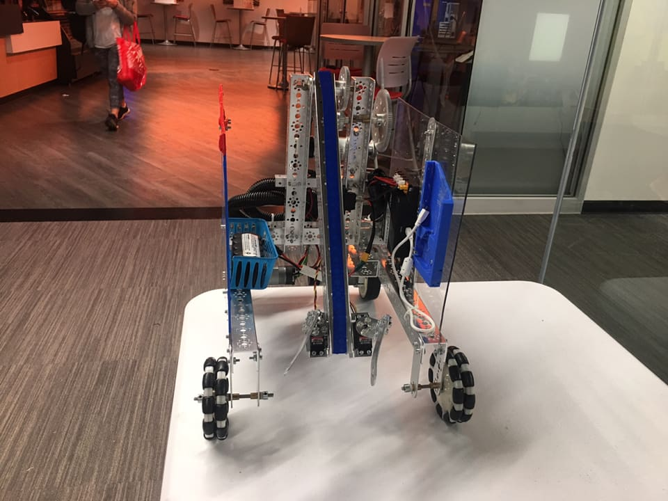
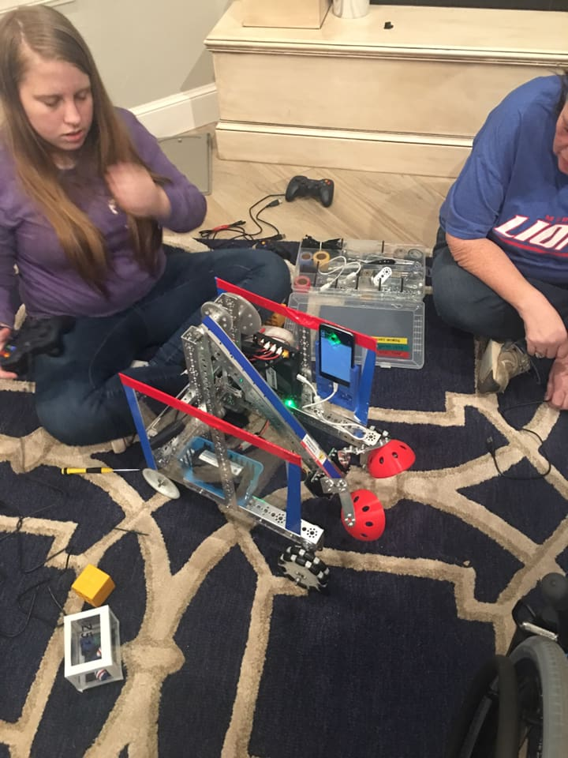
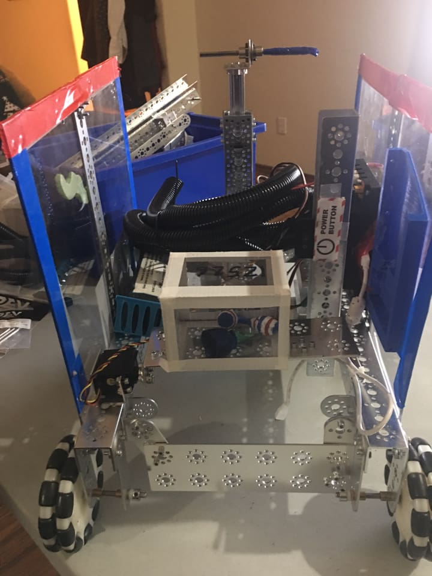
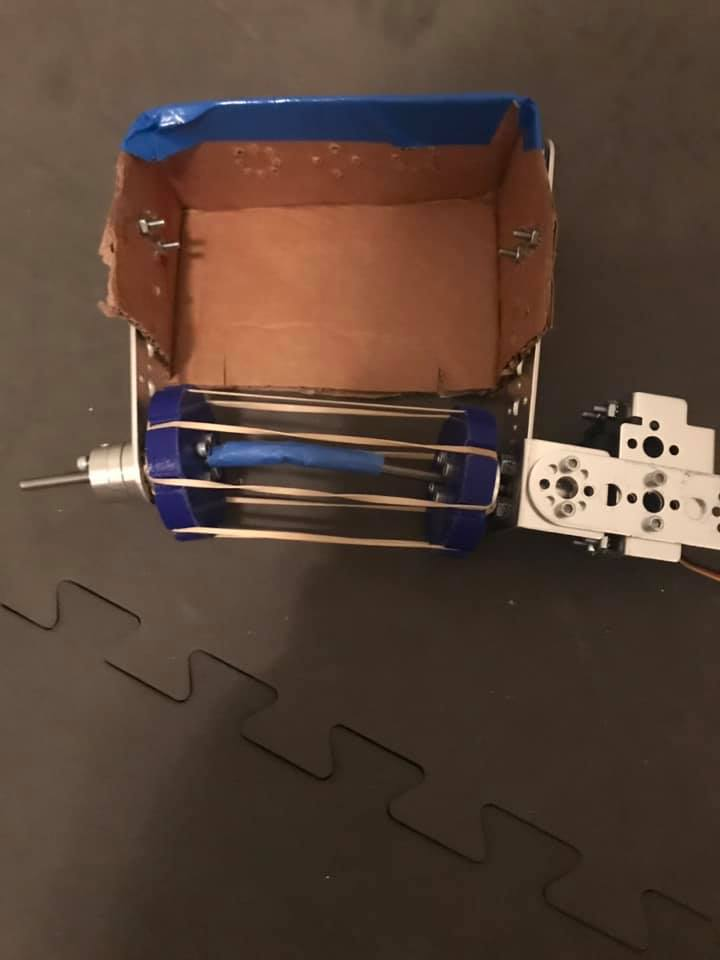
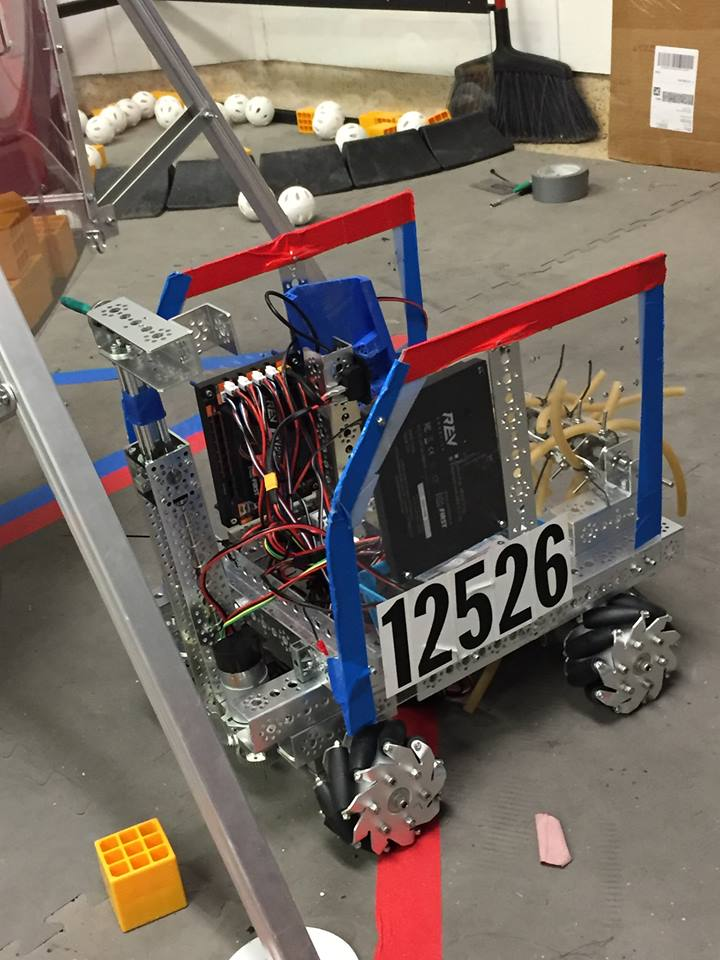

See our Robot Transform Throughout the Season!
Design one: Claw bot.
This was a pretty simple bot using an arm operated by a motor and two servos used as hands to grab minerals.
The drive train was direct drive standard wheels on the back and direct drive Omni wheels on the front.

Design one version 2: Claw bot with 3D printed claws.
The same design as the first bot, but we 3D printed the red ball attachments to try and pick up balls.

Design 2: Push Bot.
We took off the claw and added a metal plate to push the minerals into the depot. Also added an arm on the
back of the robot to hang which was made using a linear actuator. To carry the marker we added a small holder with
a
servo to dump it out on the front of the robot. Drive train stayed the same.

Design 3 (current design): Intake.
We began designing an intake for the robot to replace the pusher a while before it was actually put on and
used, here's one of our prototypes. It used a continuous rotation servo, rubber bands, duct tape and sprockets that
we 3D printed ourselves. The cardboard was a prototype only thing.


We ended up changing the continuous rotation servo to a motor since it was too slow and not powerful enough.
We tried many things for the intake itself such as zip ties and multiple variations of tubing, but the winner ended
up being slightly thicker surgical tubing tied in a u shape with some tape. Also added an aluminum plate to hold
the
minerals which one of our mentors, Warren Dempsey, who's a mechanical engineer helped us with. The plate can also
be
used as a pusher. We moved the marker holder to the side and changed our drive train to mecanum wheels which allows
us to strafe. Because of the additional motors for the new wheels, we had to add a second expansion hub.
What's next?
Currently, we're trying to make the intake extend out to where it can go in the crater and also flip up and
back to score in the lander using extrusion.
Special thanks to the fabrication lab at the Tom Love Innovation Hub at OU for helping us with everything
that we've 3D printed for the robot along with various mechanical help and advice!
© 2019 Lauren R. Smith